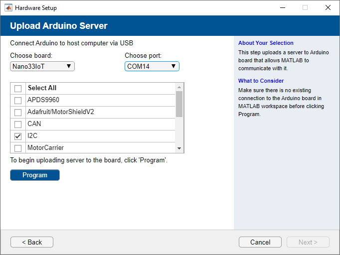
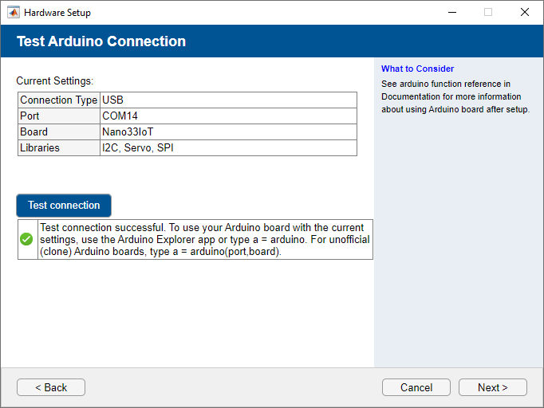
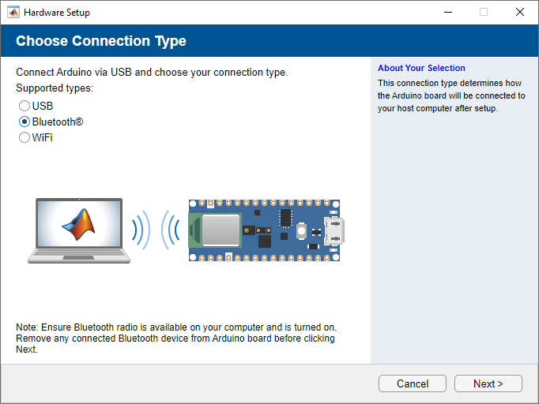
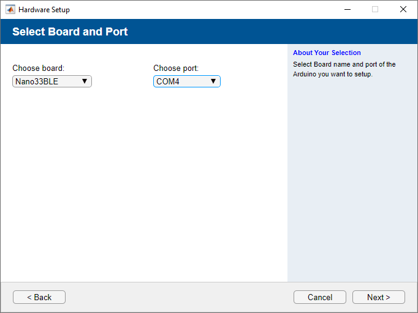
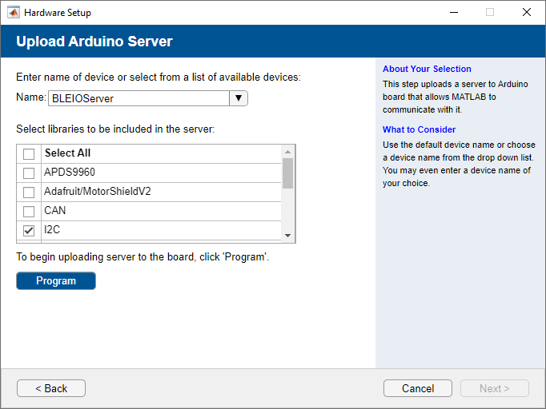
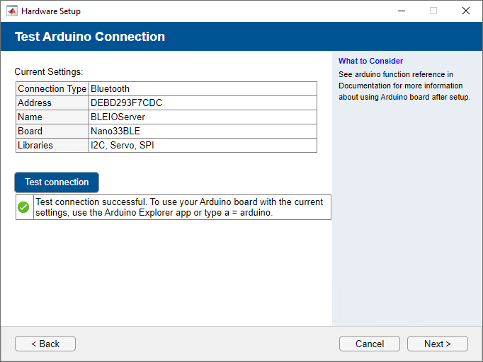
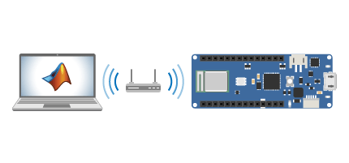
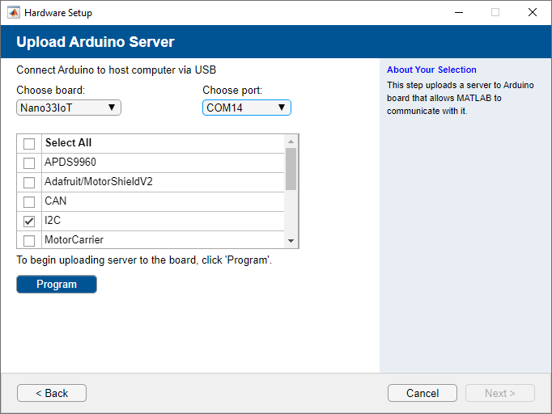
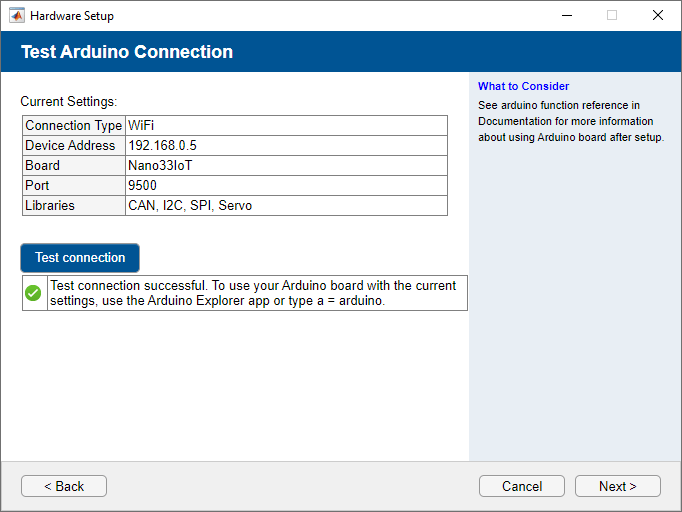

Set Up and Configure Arduino Hardware
Once you have installed the MATLAB® Support Package for Arduino® Hardware, as described in Install the Support Package, you can configure communication
between the host computer and the Arduino board. Type arduinosetup in the MATLAB Command window and choose one of the following connection types:
Connection over USB
The Arduino hardware communicates with the host computer via a USB cable as shown.

To configure your Arduino hardware to communicate via USB:
Connect the Arduino hardware via USB, by choosing the connection type USB.
Choose the board type and the port number from the
Choose boardandChoose portmenus. Then, select the libraries that you want to include in your Arduino server. Click Program to begin uploading the server to your Arduino board.
After the upload is complete, click Test connection to test the connection between your host computer and the Arduino board.

Click Finish to complete the hardware setup. To connect to your Arduino board, see Connect to Arduino Hardware.
Connection over Bluetooth
Arduino hardware communicates with the host computer via Bluetooth®, as shown.

To configure your Arduino hardware to communicate via Bluetooth:
Connect the Arduino hardware via USB, and choose the connection type Bluetooth.
Choose the board type and the port number from the
Choose boardandChoose portmenus.
Select the libraries that you want to include in your Arduino server. Click Program to begin uploading the server to your Arduino board.
If you are using
MKR1010,Nano 33 IoT,Nano 33 BLE, or theNano 33 BLE Senseboard, on the Upload Arduino Server screen:Use the Enter the name of the device or select from a list of available device menu to select an Arduino device.
Use the Select libraries to be included in the server drop-down menu to upload libraries to the hardware.
Click Program to complete uploading libraries to the Arduino device and retrieve the Bluetooth Device address from the Arduino board.

If you are using the
Uno,Due,Mega2560,Leonardo,Micro, or theNano3board, select the Bluetooth device that you want to use to communicate with the Arduino board. If you are using theHC-05orHC-06boards and you have not configured the device using thearduinosetupinterface, click No to first configure your Bluetooth device.If you are using the
Uno,Due,Mega2560,Leonardo,Micro, or theNano3board, to configure your Bluetooth device, follow the on-screen links in thearduinosetupinterface to pair your Bluetooth Classic device and to get your Bluetooth serial port or address.Note
If you are using a Windows® desktop computer, connect a Bluetooth dongle to your computer. You should use a dongle supporting Bluetooth 4.0 or higher to connect to the
MKR1010,Nano33 IoT,Nano 33 BLE, or,Nano 33 BLE Senseboards over Bluetooth.If you are using
ESP32-DevKitV1orESP32-DevKitCboards, see Configure ESP32 Hardware over Bluetooth.Click Test connection to test the connection between your host computer and the Arduino board and click Next.

Note
If you are using the
MKR1010,Nano 33 IoT,Nano 33 BLE, or theNano 33 BLE Senseboard, your computer running MATLAB can detect Bluetooth. This computer acts as a Bluetooth central.Click Finish to complete the hardware setup.
Connection over Wi-Fi
Arduino hardware communicates with the host computer via Wi-Fi®, as shown.

To configure your Arduino hardware to communicate via Wi-Fi:
Connect the Arduino hardware via USB by choosing the connection type WiFi. Choose the encryption type of your Wi-Fi network, and enter the necessary credentials.
If you have previously configured your Arduino board using Wi-Fi via the
arduinosetupinterface, you can select theRetrieve last configuration from Arduino boardoption, which retrieves the necessary credentials from your previous configuration.If you select the Use static IP address box, make sure that you use an available static IP address and that your router allows the usage of static IP.
Note
Ensure that the
Subnet Maskis255.255.255.0and theDefault Gatewayis the IP address of the network gateway.
Choose the board type as
MKR1000,MKR1010,Nano33IoTorUnoR4WiFiand its port number. Also, select the libraries that you want to include in your Arduino board. Click Program to begin uploading the server to your Arduino board.Note
If you are using
ESP32-DevKitV1orESP32-DevKitCboards, see Configure ESP32 Hardware over WiFi.
After the upload is complete, click Test connection to test the connection between the host computer and the Arduino board.

Click Finish to complete the hardware setup.